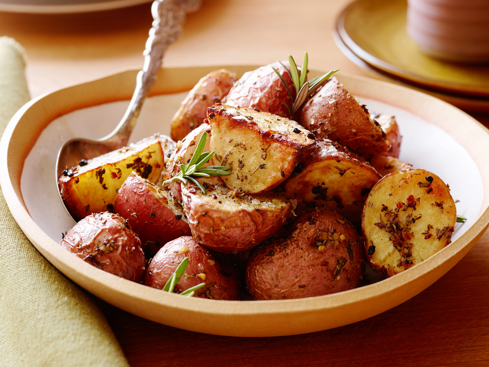

Roasted Potatoes

Description:
The best potatoes ever made.
Ingredients:
- 1.5 lbs of small, red potatoes
- 2 tablespoons of olive oil
- 3/4 teaspoons of kosher salt
- 1/2 teaspoons of freshly ground black pepper
- 3 garlic cloves
- 2 tablespoons of fresh, minced rosemary
Steps:
- Preheat oven to 400oF.
- Thoroughly wash potatoes and let dry.
- Mince garlic cloves and rosemary very finely.
- Cut potatoes into halves or quarters and place in a bowl.
- Add olive oil, salt, pepper, garlic, and rosemary.
- Toss potatoes and mix until all potatoes are well-coated.
- Place potatoes on a baking sheet and spread out evenly into a single layer.
- Roast potatoes for 30 minutes.
- Take baking sheet out of the oven and flip potatoes over.
- Roast potatoes for 15 minutes.
- Take baking sheet out of the oven and flip potatoes over.
- Roast potatoes for 15 minutes or until browned and crisp.
- Let potatoes cool off for 5 minutes before serving.
Source:
https://www.foodnetwork.com/recipes/ina-garten/rosemary-roasted-potatoes-recipe-1943124